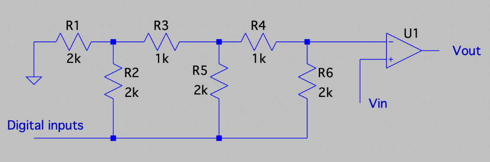
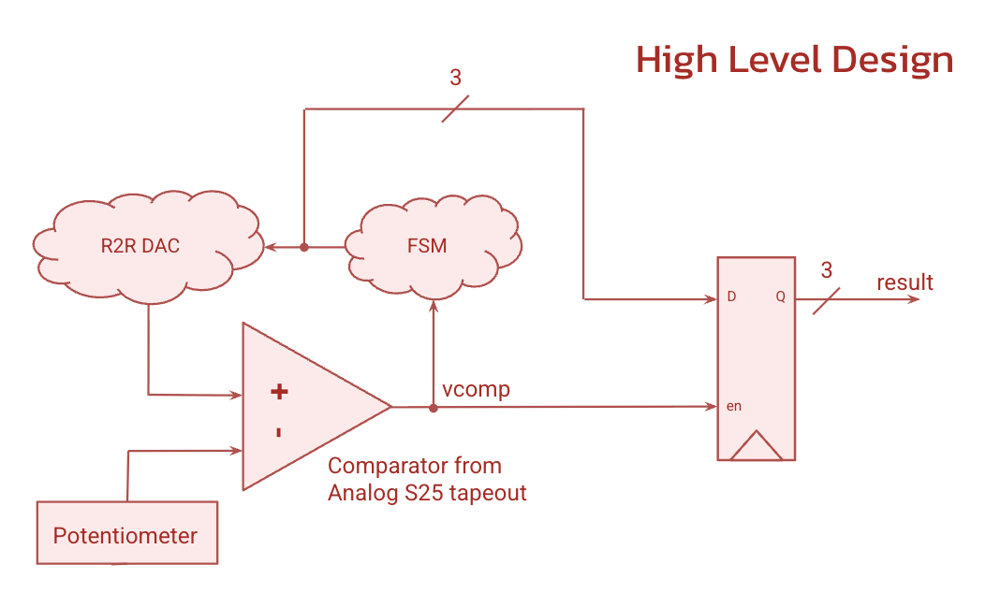

Mixed-Signal Asynchronous Flash ADC


Overview
This demo was mainly a way to test the comparator on our Analog S25 tapeout, both to confirm it worked correctly in silicon and to see if it could be reused for other applications beyond its original design. We built it into a small R2R ladder ADC to exercise it against a real analog input and a digital controller: an FSM steps a code to the R2R DAC, the resulting reference voltage is compared against the input, and the comparator's result feeds back into the FSM to decide whether to keep stepping or latch a final answer. Getting that loop working end to end confirmed the comparator performed as expected and could support more than its original use case.
More details
A flash ADC compares the input against many parallel references at once, but needs one comparator per level and stays sensitive to mismatch. We borrowed the reference ladder idea but used it serially, mainly to exercise our single comparator repeatedly rather than build a competitive ADC. The ladder and comparator came from the same S25 tapeout as last year's SAR ADC, but our FSM just counts the ladder code up one step at a time and watches for the comparator to trip, instead of doing a binary search, so we skipped the SAR design's bootstrapped switching and break before make logic.
On the breadboard, a six resistor R2R ladder fed one comparator input, with a potentiometer as the analog input on the other. The comparator itself just outputs a single bit, vcomp, indicating which of its two inputs is higher, so it's essentially converting the analog difference between the ladder voltage and Vin into a digital signal the FSM can act on. The FSM steps through states 3'b000 to 3'b111, each one the code sent to the DAC. While vcomp reads 0 it increments each clock edge; once vcomp flips to 1, the ladder voltage has passed the input, so the FSM resets and the trip state latches into a result register.
We confirmed this in simulation, where r2r_out and result tracked vcomp as expected, and on the oscilloscope, where the DAC output showed the expected ramp and reset pattern at both high and low voltage scales. This confirmed the comparator worked reliably across repeated cycles, not just one test cases.
← Back to projects